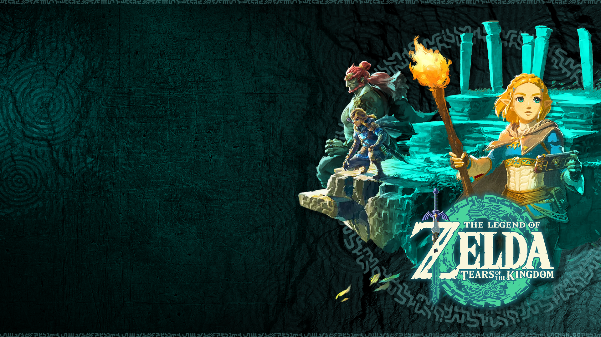
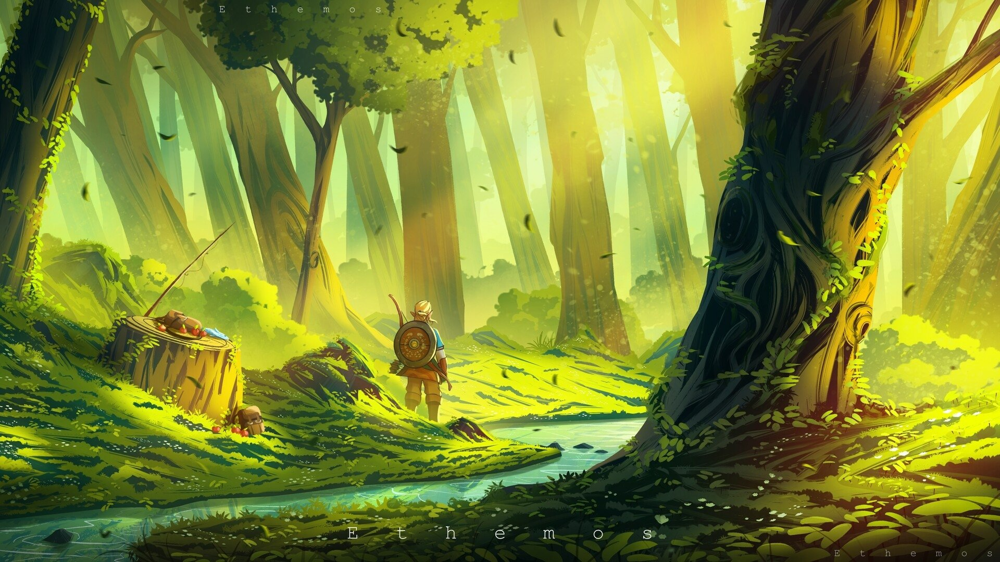
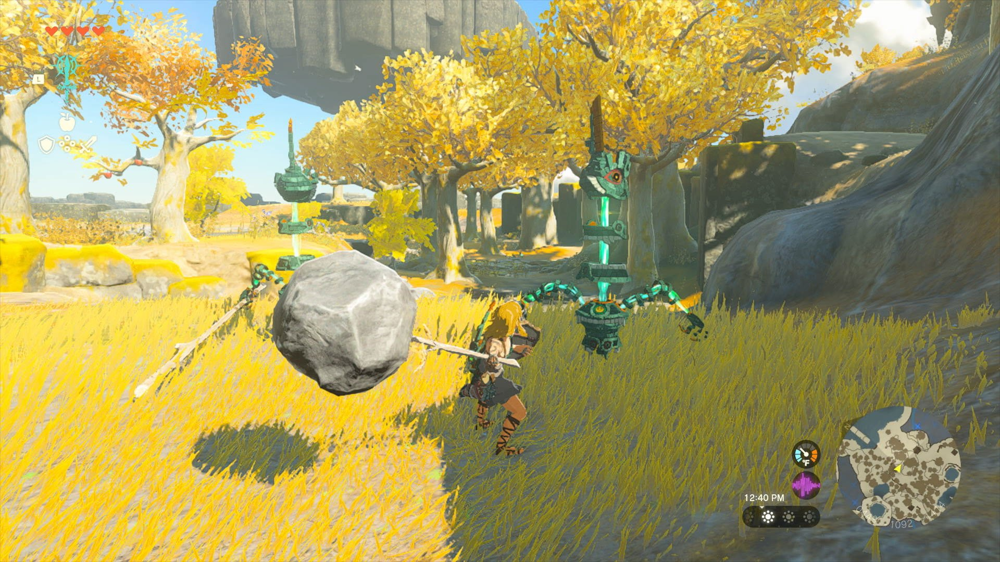

The Legend of Zelda: Tears of the Kingdom – Uusi seikkailu hyrulen maailmassa

The Legend of Zelda: Tears of the Kingdom vie pelaajat jälleen kerran seikkailulle läpi Hyrulen maailman tarjoten uusia mysteereitä, vaaroja ja sankaritekoja. Vaikka peli kunnioittaa sarjan perinteitä, se tuo mukanaan myös tuoreita elementtejä ja jännittävää tarinankerrontaa.
Pelin tarina upottaa pelaajan Hyrulen syvyyksiin, kun Linkin on kohdattava uusi paha voima, joka uhkaa koko kuningaskuntaa. Matka vie pelaajan läpi monipuolisten maisemien ja kohtaamisten, jotka yhdistävät tutut elementit sarjasta uusiin ja yllättäviin käänteisiin.

Pelattavuudeltaan Tears of Kingdom tarjoaa tasapainoisen sekoituksen tuttua ja uutta. Tutut taistelumekaniikat ja pulmienratkaisutehtävät pohjaavat vankkaan perinteeseen, samalla kun uudet elementit, kuten muokattavat aseet ja laajennettu liikevalikoima, tuovat raikkaan tuulahduksen sarjan kaavaan.
Graafisesti peli on silmiä hivelevä, tarjoten upeasti suunniteltuja maisemia ja yksityiskohtaisia hahmoja, jotka herättävät Hyrulen eloon. Pelin ääniraita on myös huippuluokkaa, täydentäen seikkailua tunnelmallisilla sävellyksillä ja ääniefekteillä.

Vaikka Tears of Kingdom tarjoaa laadukkaan ja mukaansatempaavan pelikokemuksen, siinä saattaa olla joitakin teknisiä haasteita, kuten satunnaisia bugiraportteja ja suorituskykyongelmia tietyissä tilanteissa. Näitä ongelmia toivotaan kuitenkin korjattavan tulevilla päivityksillä.
Kokonaisuudessaan The Legend of Zelda: Tears of the Kingdom on kunnianhimoinen ja vakuuttava lisäys legendaariseen Zelda-sarjaan. Se tarjoaa unohtumattoman seikkailun niille, jotka rakastavat Hyrulen maailmaa ja sen mysteereitä.